Префектура Миэ · Цу · храмы и еда
Цу глазами местного фотографа: храм Сэндзю-дзи, маяк у залива и лавки, куда ходят свои
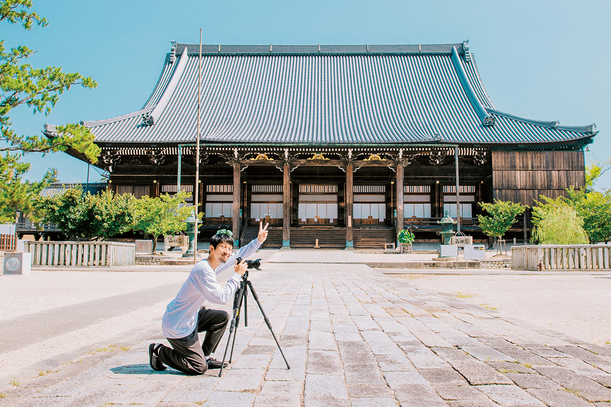
Цу, столицу префектуры Миэ, обычно проезжают по дороге в Исэ. Фотограф, который вырос здесь и прославился семейными снимками, показал город так, как его знают местные: с одним из главных храмов страны, маяком у залива и лавками, где его встречают как родного.
Город
Родина, которую замечаешь не сразу
Фотограф родился в Цу в 1979 году. Семейные снимки, которые принесли ему известность, он начал делать ещё студентом фотошколы в Осаке, и многие из них сняты в родном городе. В 24 года он переехал в Токио, но снимать семью и Цу продолжает до сих пор, и с каждым годом, по его словам, ценит их всё больше.
«Когда я уезжал, меня тянуло в большой город, и я совсем не понимал, чем хорош Цу. Родина похожа на семью: ни ту, ни другую не выбираешь, и, пока ты внутри, они порой раздражают. Но на них держится всё остальное. Только уехав, я понял, как много для меня значат запах здешнего моря и самые обычные виды. Цу знают как родину тэммусу, рисовых колобков с жареной креветкой, и как город, где вкусно кормят угрём и якинику. Мне хочется рассказать и о том, что есть здесь кроме этого»
фотограф, уроженец Цу
Храм
Сэндзю-дзи: главный храм школы Такада
Первым делом он отправился в Сэндзю-дзи, главный храм школы Синсю Такада. Основателем этого направления буддизма Чистой земли считают Синрана (1173–1263), монаха, который учил, что спасение даёт не собственное подвижничество, а сила будды Амиды. В храме два деревянных здания со статусом национального сокровища и 11 важных культурных ценностей страны.
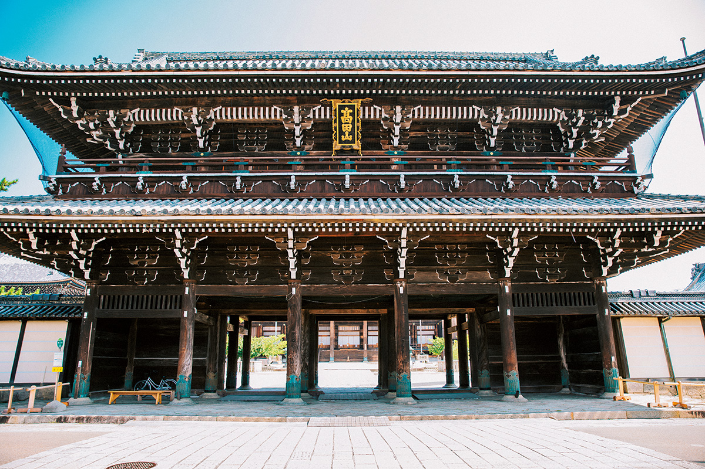
Зал Миэйдо, который видно на первой фотографии, поставили в 1666 году. Его строили так, чтобы любой мог войти и сложить ладони перед алтарём. Внутри всё устроено как образ Чистой земли будды Амиды, какой её описывают сутры: в храме сравнивают это с современной виртуальной реальностью. В центре, в позолоченном святилище, стоит деревянная статуя Синрана.
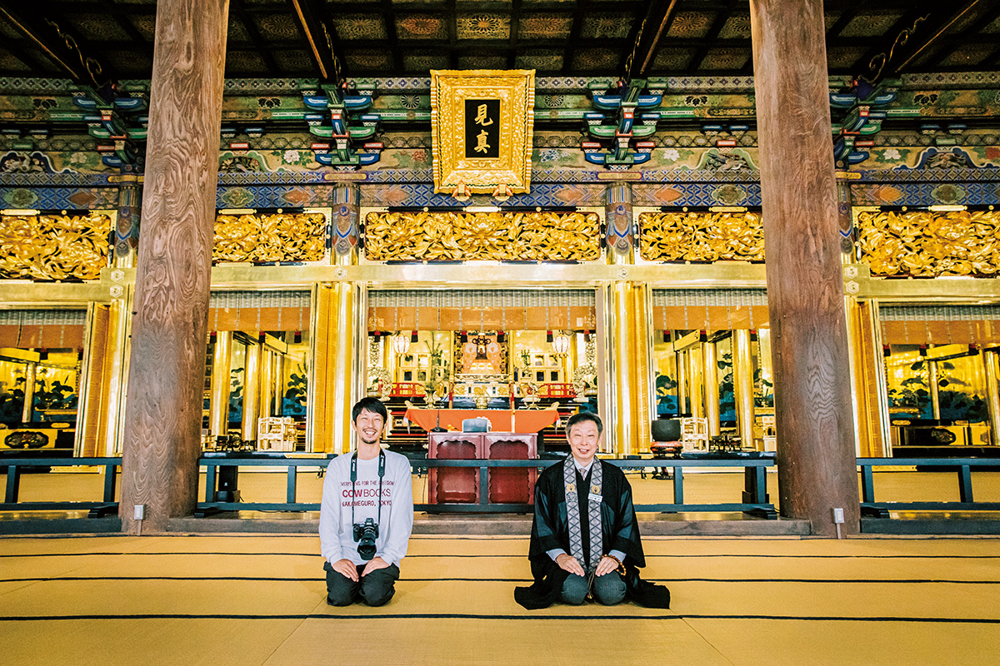
Рядом стоит второй зал со статусом национального сокровища, Нёрайдо. Его резьбу стоит рассмотреть вблизи: облака счастливого знамения здесь вырезаны из цельной доски с помощью самой передовой для своего времени техники.
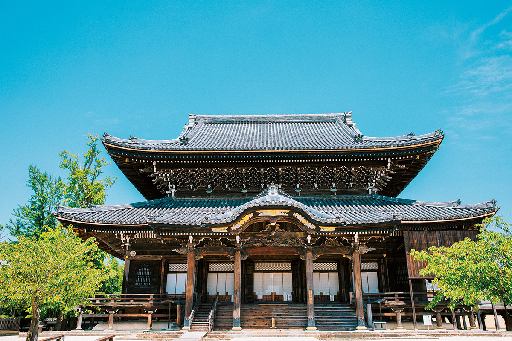
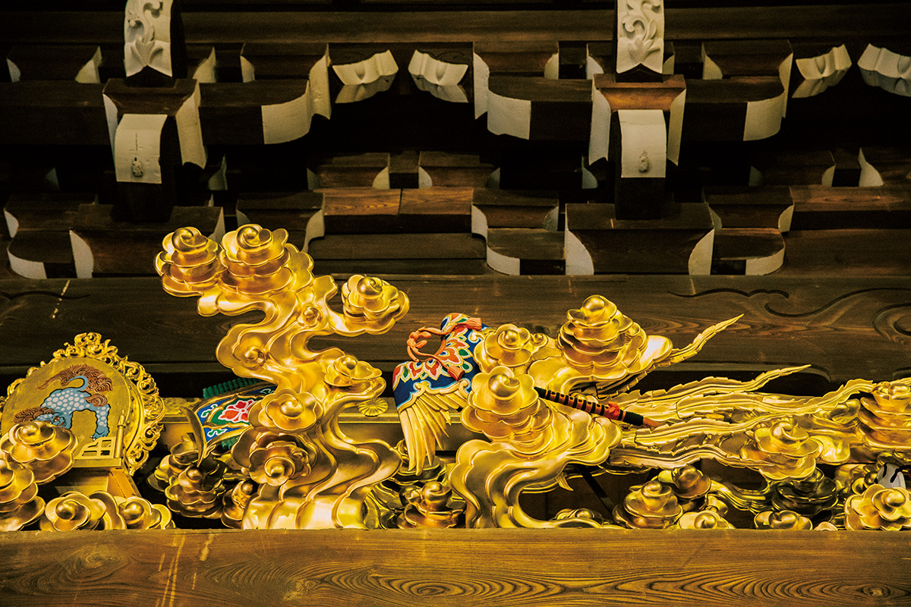
Сам фотограф раньше бывал здесь лишь на о-Сития, большой поминальной службе в память Синрана, и толком храм не осматривал.
«Когда тебе объясняют, что значит каждое здание и каждый узор, удивляешься, какие сокровища всё это время были под боком. Утреннюю службу и проповедь проводят каждый день, все 365 дней в году, и прийти может любой. В следующий раз обязательно приду»
фотограф, уроженец Цу
Учение
Зачем складывать ладони
Возле Нёрайдо стоит небольшой зал Тайсидо, посвящённый принцу Сётоку (574–622), правителю, при котором буддизм укоренился в Японии. По преданию, именно он явился Синрану во сне и велел идти учиться к монаху Хонэну (1133–1212), основателю школы Чистой земли.
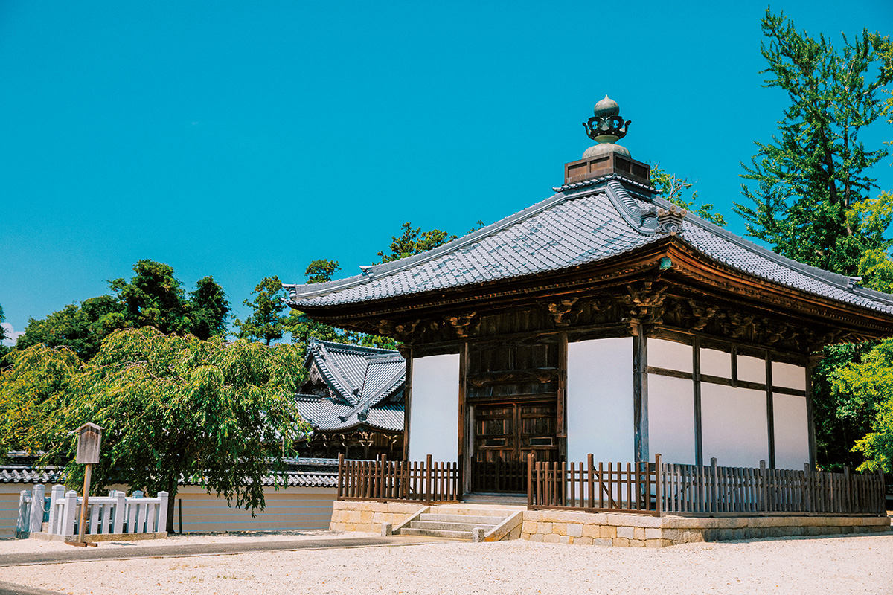
Монах храма объясняет учение так. В буддизме условие перехода в Чистую землю это избавление от желаний. В пяти тысячах сутр описаны разные пути, но в целом их два: собственная сила и сила другого. Синран двадцать лет провёл в суровой практике на горе Хиэй, однако желания возвращались снова и снова. Тогда он оставил подвижничество и пришёл к Хонэну, который учил полагаться на силу другого.
Выражение «полагаться на силу другого» в Японии часто понимают как «жить за чужой счёт», но «другой» здесь это будда Амида. Амида и предки, ставшие буддами, словно говорят человеку: «Мы сотрём твои желания, приходи в Чистую землю». Человеку остаётся одно: произнести «Наму Амида буцу» и сложить ладони, то есть сказать спасибо. Поминовение предков с этой точки зрения тоже не услуга, которую мы им оказываем, а повод поблагодарить.
«Здесь нет ни амулетов, ни табличек с молитвами. Амулет покупают, чтобы о чём-то попросить: о безопасной дороге, о хорошей паре. А учение Синрана говорит, что Амида обещал спасение каждому с самого рождения»
монах храма Сэндзю-дзи
Фотограф признался, что после этого разговора иначе смотрит на собственную работу: даже возможность снять семейный портрет и нажать на спуск он теперь воспринимает как подарок.
Храм Сэндзю-дзи
- Адрес
- префектура Миэ, Цу, Иссиндэн-тё, 2819
- Телефон
- +81 59-232-4171
- Часы работы
- ворота Саммон и Карамон 6:00–18:00, залы Миэйдо и Нёрайдо 6:00–15:30 (с 9 по 15 января до 17:30)
Прогулка
Любимые места фотографа
Дальше фотограф повёл нас по своим местам. Куда бы он ни зашёл, его встречали улыбками, и было видно, как его здесь любят.
Маяк на волнорезе Акогиура
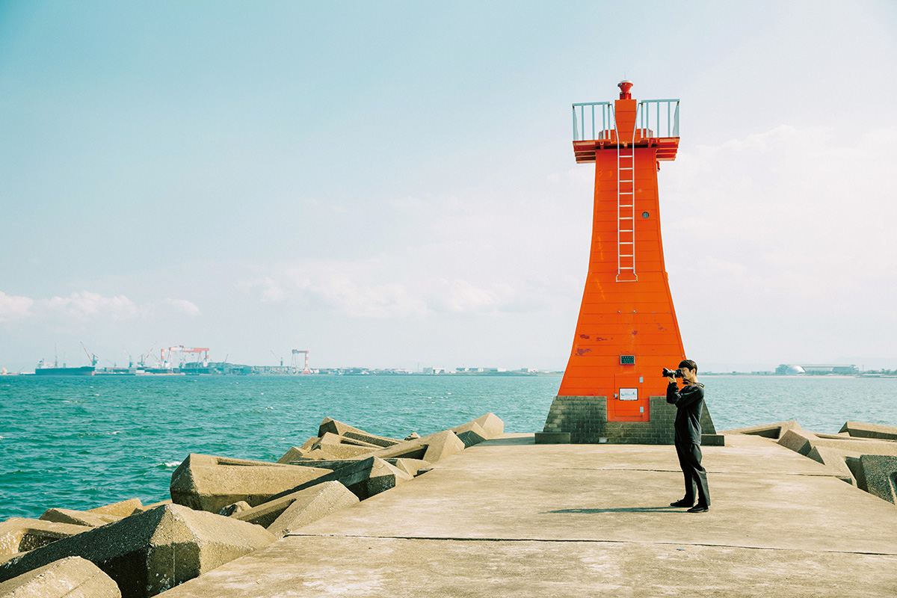
Маяк стоит в нескольких минутах ходьбы от родительского дома фотографа. Он приходил сюда с детства, и именно вид на залив Исэ с волнореза для него означает дом. Теперь он часто гуляет здесь со старшим сыном. Рядом есть пляж, где можно найти ракушки и крабов.
«Якинику Тэмпуку»: якинику по записи
В этой закусочной якинику фотограф подрабатывал ещё старшеклассником. Хозяйка вспоминает, что он был «добрым заводилой» всей смены. На стенах висят снимки сотрудников всех лет, которые он сделал сам.
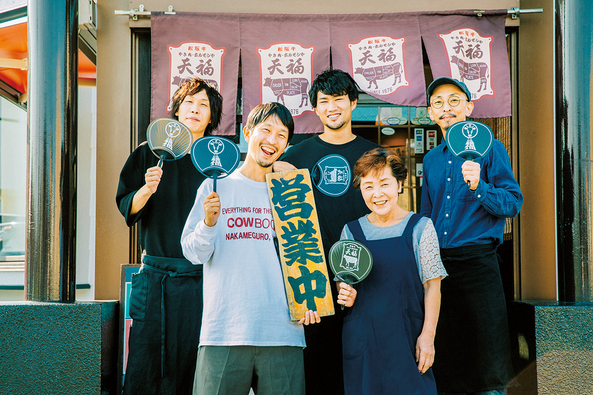
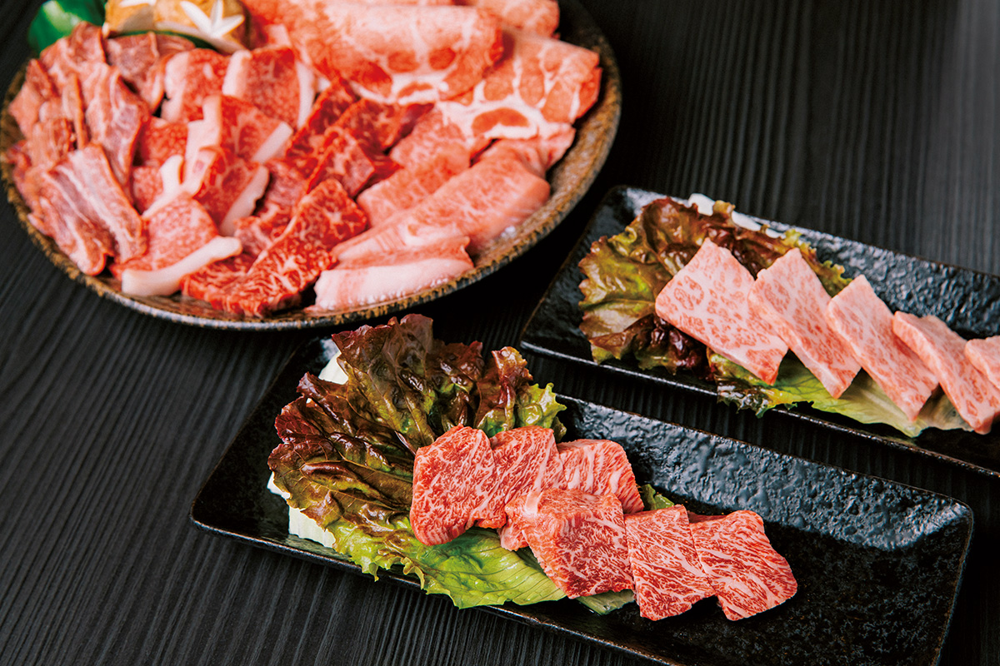
Самое популярное блюдо здесь большое ассорти из говядины, в которое входит и знаменитая Мацусака: в 2020 году оно стоило 4048 иен. Цу славится якинику, мест много, и даже среди них «Тэмпуку» пользуется такой любовью, что без брони сюда лучше не приходить.
«Якинику Тэмпуку»
- Адрес
- префектура Миэ, Цу, Фудзиката, 1245-3
- Телефон
- +81 59-225-8329
- Часы работы
- 16:00–21:30 (последний заказ); суббота и воскресенье 11:00–14:00 и 17:00–21:30 (последний заказ)
- Выходные
- понедельник
DE CARNERO CASTE Mie: кастелла с клеймом
Кастелла, бисквит, который в Японию когда-то привезли португальцы, здесь главный и единственный товар. Пекут его из пшеницы префектуры Миэ и отборных яиц, а сверху ставят забавное выжженное клеймо. Такую кастеллу удобно брать в подарок. Знакомство с фотографом началось, когда он устраивал выставку в кафе, которое раньше работало по соседству. У магазина есть филиалы в Осаке и Токио, а этот, в Цу, главный.
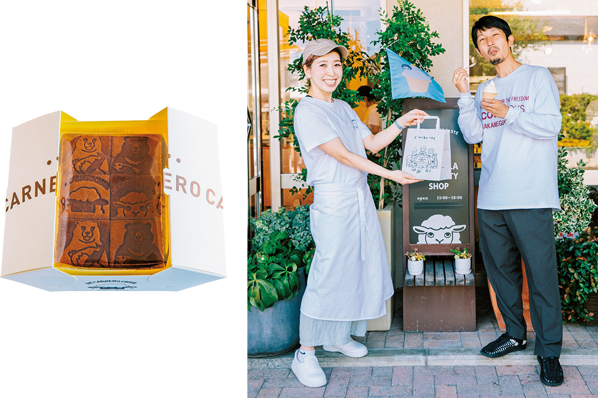
DE CARNERO CASTE Mie
- Адрес
- префектура Миэ, Цу, Нагаока-тё, 3060-1
- Телефон
- +81 59-253-3333
- Часы работы
- 11:00–18:00
- Выходные
- без выходных
KUKSA: пекарня до последней булки
Пекарню держит семья, с которой фотограф дружит домами. Здесь много недорогой и вкусной выпечки, от сытной с начинкой до сладкой, и покупатели идут один за другим. Пекарня закрывается, когда раскупят хлеб, так что приходить лучше пораньше.
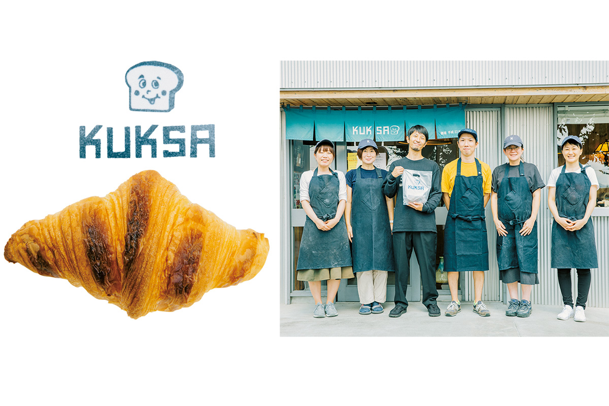
KUKSA
- Адрес
- префектура Миэ, Цу, Хисай Идояма-тё, 832-25
- Телефон
- +81 59-255-6993
- Часы работы
- 10:00–19:00
- Выходные
- четверг, воскресенье, праздничные дни
«Тонэ касикан»: сладости от одноклассника
Кондитерскую ведёт одноклассник фотографа по средней школе. Здесь делают и японские сладости вагаси с собственной бобовой пастой, и европейские десерты, отмеченные на конкурсах. Выбор большой, а качество ровное. Когда фотограф едет снимать, он везёт отсюда гостинцы для тех, кто ему помогает.
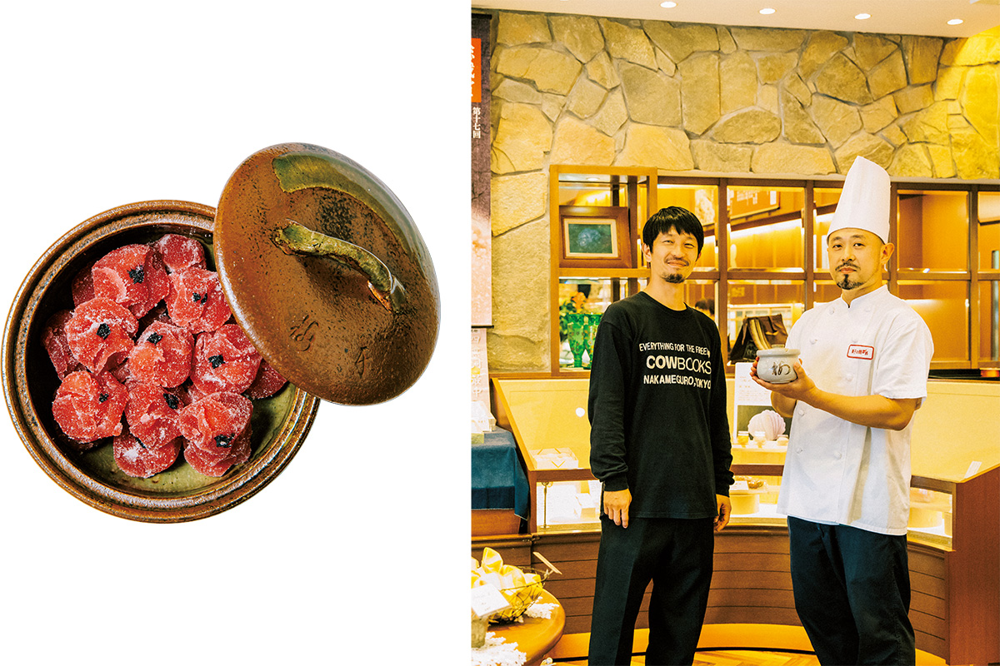
«Тонэ касикан»
- Адрес
- префектура Миэ, Цу, Хон-мати, 26-20
- Телефон
- 0120-26-4343 (бесплатный номер внутри Японии)
- Часы работы
- 9:00–19:00
- Выходные
- среда
Дорога
Как добраться до Цу
От Нагои до станции Цу около 50 минут на скором поезде JR или на экспрессе компании «Кинтэцу». От станции Осака-Намба экспресс «Кинтэцу» идёт около полутора часов. Храм и любимые места фотографа разбросаны по городу, поэтому от станции Цу удобнее ехать на арендованной машине.
Фото: Майко Фукуи.